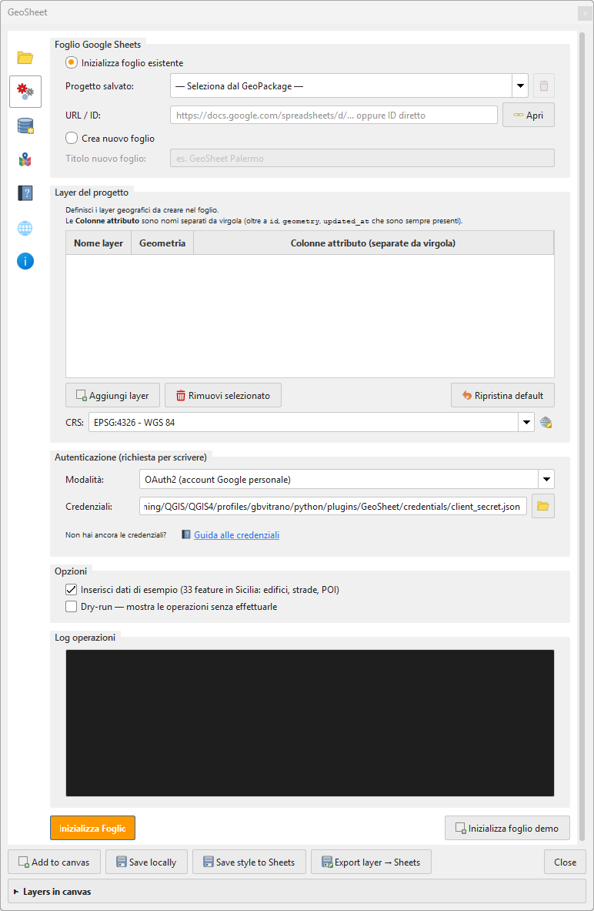
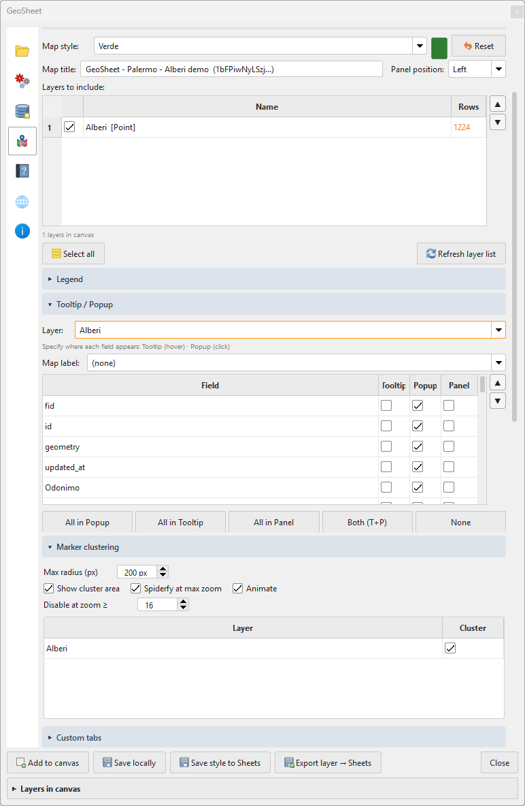
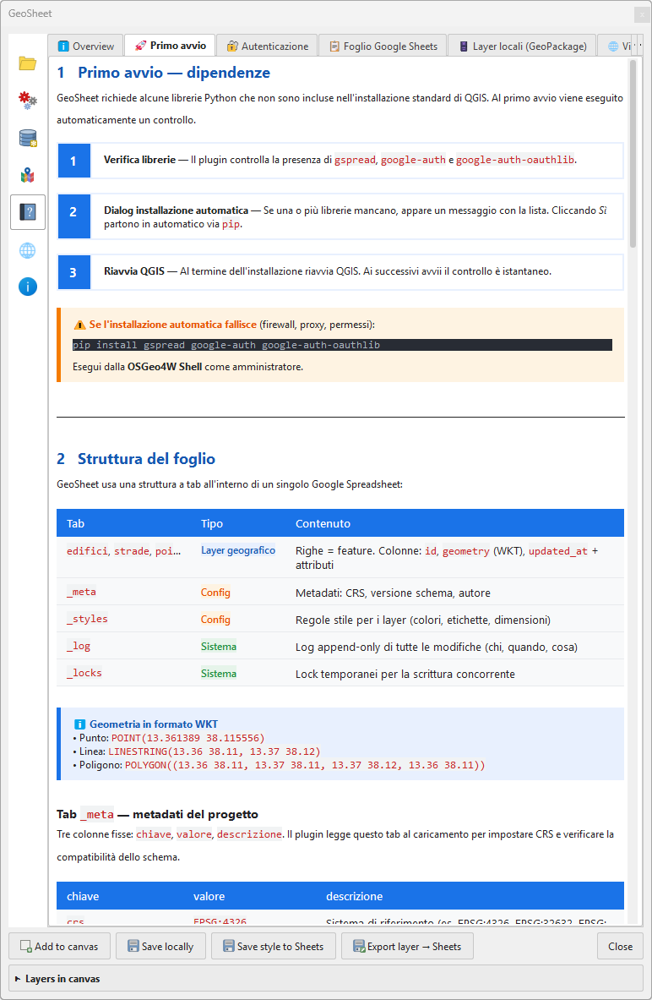
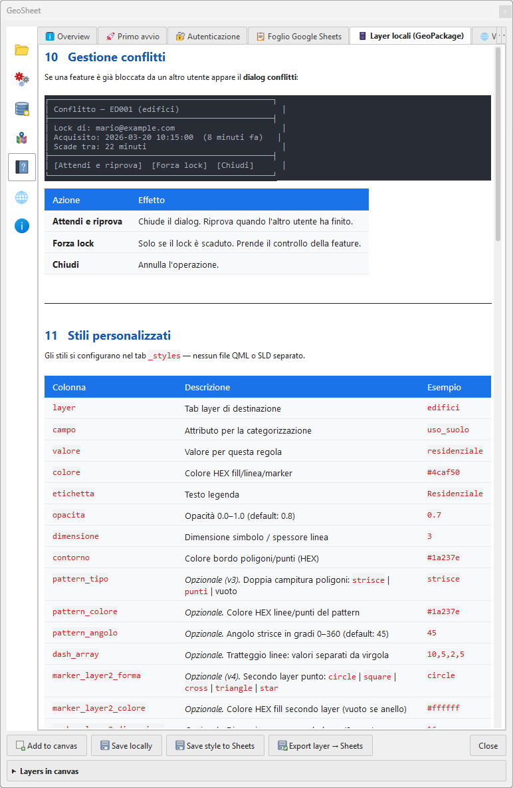
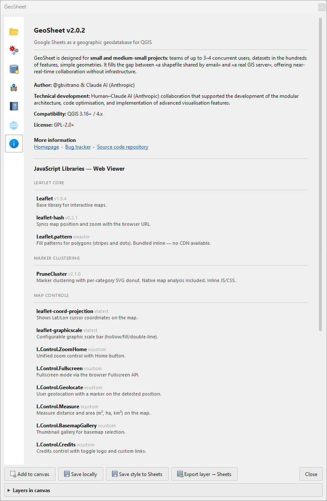

Schermata principale del plugin: selezione del progetto, inserimento URL/ID del foglio Google, autenticazione OAuth2, caricamento layer e gestione della sincronizzazione automatica.

Tab di inizializzazione: permette di creare un nuovo foglio Google o collegarne uno esistente, definire i layer con le relative colonne attributo, il CRS e le credenziali di autenticazione.

Tab mappa web: configurazione del tema grafico, titolo, layer da esportare, campi da mostrare in tooltip/popup/pannello laterale, e opzioni di marker clustering.

Guida integrata: descrive il primo avvio del plugin, le dipendenze richieste e la struttura del foglio Google con le colonne obbligatorie e i tag di personalizzazione.

Guida integrata: gestione dei conflitti di modifica concorrente e configurazione dei tab personalizzati nel viewer web tramite variabili del foglio.

Tab Informazioni: versione del plugin, descrizione, autore, compatibilità QGIS, licenza e riepilogo delle librerie JavaScript utilizzate nel viewer web.